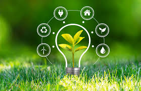

No campo as inovações como os drones, maquinários vieram para facilitar o dia a dia no campo acelerando o processo de plantio e colheita, ajudando os produtores para serem mais eficientes.
A importância do campo reside em seu papel como o produtor de muitas das matérias primas que permitem alimentar uma grnade parte da população mundial.
Tecnologia sustentável é qualquer tecnologia utilizada com o objetivo de conservar os recursos naturais e promover o desenvolvimento social e econômico para as gerações futuras. Um conjunto de técnicas, habilidades, métodos, e processos usados para produzir um produto.
Quando a inovação tecnológica possibilita a substituição de recursos não renováveis por recursos renováveis. Por exemplo, usar lâmpadas movidas a energia solar para iluminar ruas e caminhos ao invés de lâmpadas incandescentes conectadas à rede eletrica local. Isso também se aplica à mudanças de materiais não biodegradáveis para materias biodegradáveis na produção.
